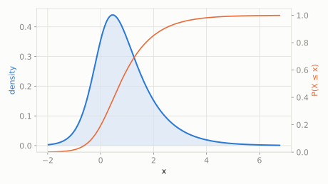

Continuous extended catalog
Generalized Hyperbolic
scipy.stats.genhyperbolic
Intuition
A very flexible bell-shaped family that can be tuned to look normal, exponential-tailed, or heavy-tailed, and skewed in either direction -- it's the workhorse behind modern financial return models because real asset prices have fatter tails and more skew than a normal curve allows.
Formula
\[ f(x;p,a,b) = \frac{(a^2-b^2)^{p/2}}{\sqrt{2\pi}\,a^{p-1/2}K_p\!\left(\sqrt{a^2-b^2}\right)}\,e^{bx}\,\frac{K_{p-1/2}\!\left(a\sqrt{1+x^2}\right)}{\left(\sqrt{1+x^2}\right)^{1/2-p}} \]
| parameter | default used here | meaning |
|---|
p | 0.5 | tail/shape parameter, lambda |
a | 2 | tail-heaviness parameter, alpha (a > 0) |
b | 1 | skewness parameter, beta (|b| < a) |
Use cases
- Financial asset return modeling (fat tails and skew)
- Turbulence and particle physics data with heavy-tailed fluctuations
A funny example
A kid's weekly allowance savings usually grows by a typical, predictable amount, but every so often -- a bit more often than a plain bell curve would suggest -- there's either a windfall or an unexpectedly bad week, and the swings aren't perfectly symmetric either.
What's the probability this week's change is negative, and what's the expected change?
Solve it with scipy.stats
import scipy.stats as stats
import numpy as np
dist = stats.genhyperbolic(p=0.5, a=2, b=1)
print('P(X < 0):', round(dist.cdf(0), 4))
print('mean:', round(dist.mean(), 4))
P(X < 0): 0.194
mean: 0.9107

Theoretical shape at the default parameters above (blue = density/PMF, orange = CDF).